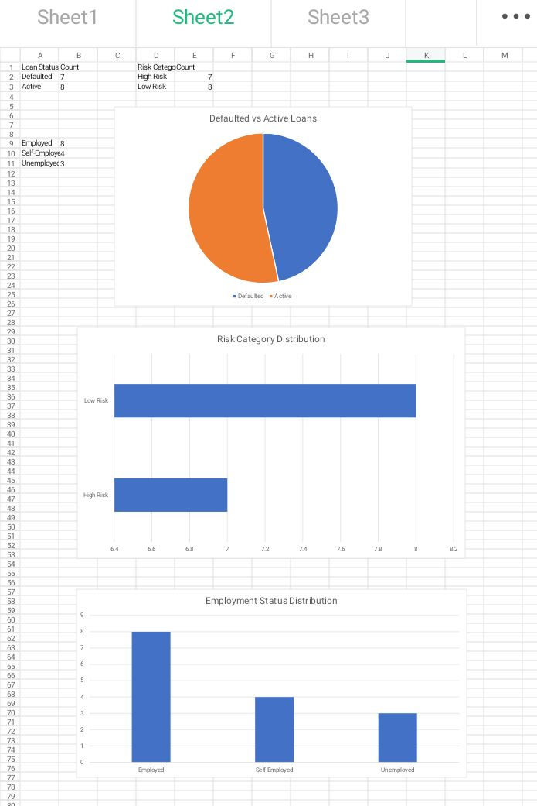
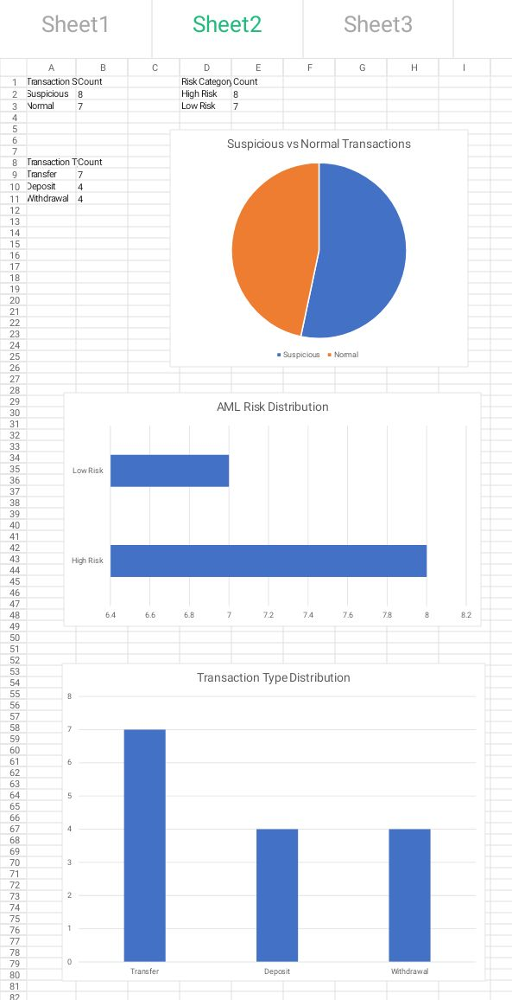
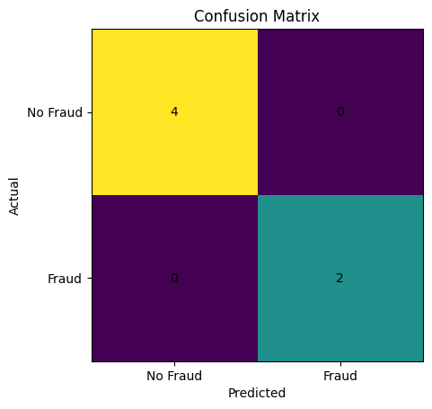

Published Books
Books published under the author name Elizabeth Awodola.

The Awakening of the Enduring Vulture

Trouble Has No Bed

Doctor Piri

Fẹ́mi’s Rainbow World: Colours of Culture

Wakili the Foodie

The Stupid Gong
Researcher | Author | Publisher | Aspiring Data Scientist
Research-driven scholar with expertise in accounting, financial systems analysis, fraud investigation, banking operations, educational publishing, and emerging applications of Artificial Intelligence in financial crime detection.
My research focuses on the application of Artificial Intelligence (AI), Machine Learning, Data Analytics, and Risk Modelling to fraud detection, anti-money laundering, financial crime prevention, and risk management in emerging markets.
I am also a published author and founder of Awobod Global Publications, committed to promoting literacy, educational development, and quality children's literature.
Fraud and Performance of Deposit Money Banks (2019)
Books published under the author name Elizabeth Awodola.
The Awakening of the Enduring Vulture
Trouble Has No Bed
Doctor Piri
Fẹ́mi’s Rainbow World: Colours of Culture
Wakili the Foodie
The Stupid Gong
Fraud Detection Analysis Using Transaction Pattern Monitoring
This project focuses on identifying potentially fraudulent financial transactions using transaction monitoring, risk scoring, and anomaly detection techniques.

Credit Risk Analysis Using Customer Financial Behaviour
This project focuses on assessing customer creditworthiness using financial behaviour, risk indicators, and data analytics techniques.

Anti-Money Laundering (AML) Analysis Using Suspicious Transaction Monitoring
This project focuses on identifying suspicious financial transactions using AML risk scoring, transaction monitoring, and data analytics techniques.
AML Analytics Project
Python-Based Fraud Detection Model Using Machine Learning
This project demonstrates the application of Python and machine learning techniques to predict fraudulent financial transactions using a simulated banking dataset.
Fraud Detection Analysis Using Transaction Pattern Monitoring
This project focuses on identifying potentially fraudulent financial transactions using transaction monitoring, risk scoring, and anomaly detection techniques.
Credit Risk Analysis Using Customer Financial Behaviour
This project focuses on assessing customer creditworthiness using financial behaviour, risk indicators, and data analytics techniques.
Anti-Money Laundering (AML) Analysis Using Suspicious Transaction Monitoring
This project focuses on identifying suspicious financial transactions using AML risk scoring, transaction monitoring, and data analytics techniques.
Python-Based Fraud Detection Model Using Machine Learning
This project demonstrates the application of Python and machine learning techniques to predict fraudulent financial transactions using a simulated banking dataset.
 Model Accuracy: 100% |
Precision: 100% |
Recall: 100% Research & Academic Enquiries: Publishing & Professional Enquiries:
GitHub:
LinkedIn:Python Fraud Detection Project
Fraud Analytics Project
Credit Risk Analytics Project
AML Analytics Project
Python Fraud Detection Project
Upcoming Machine Learning Projects
Contact
olueliawodola@yahoo.com
awobodglobalpublications@gmail.com
Elizabeth-pub
Awobod Publications